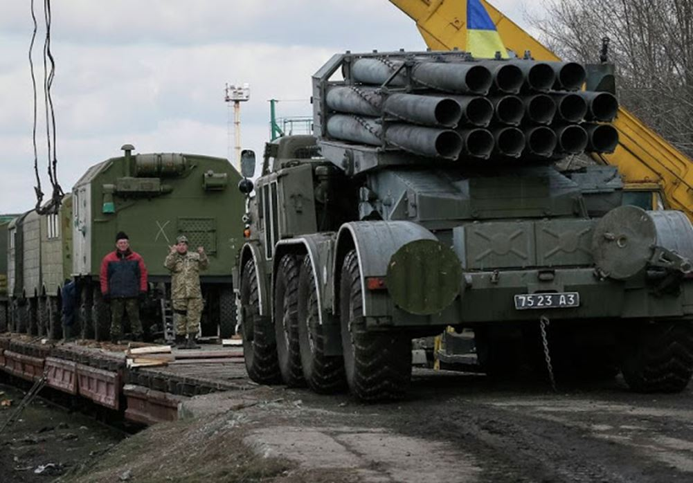
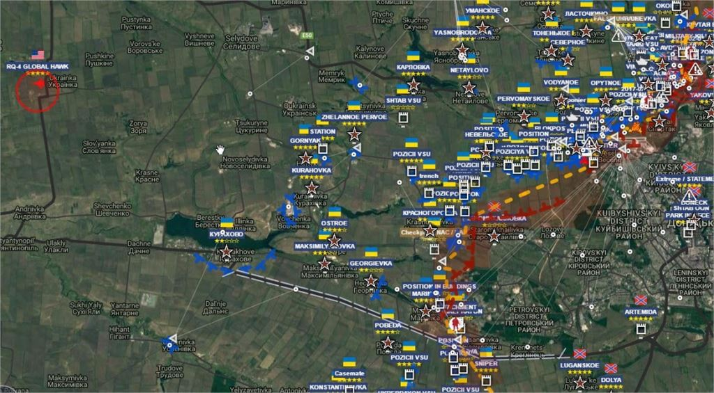
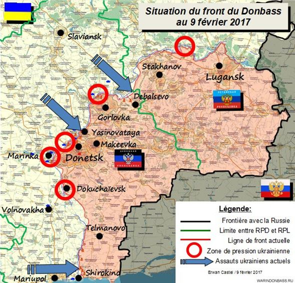
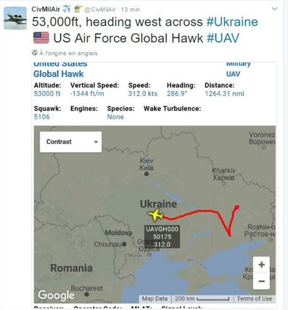
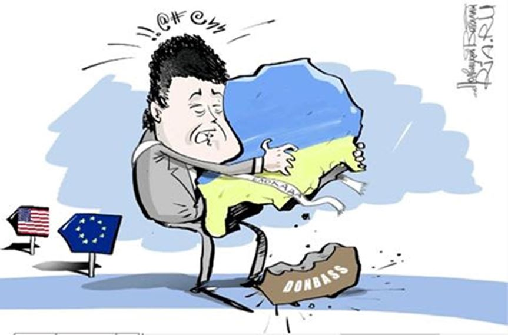

UNE GUERRE DU DONBASS QUI RISQUE D'EXPLOSER À TOUT MOMENT
Depuis décembre, l'armée ukrainienne, sans lancer une grande offensive majeure a procédé à un crescendo d'opérations offensives contre les lignes de défense républicaines, appliquant une stratégie qu'elle nomme elle-même « saut de crapaud », et qui aboutit, par une violation de la zone neutre, à créer de nouvelles zones de contact difficiles où les combats deviennent permanents.

Convoi ferroviaire ukrainien en route vers le Donbass. Lance Roquette Multiples BM27 Uragan
Après Debalsevo et Shirokino, c'est à Yasinovataya, entre le 29 janvier et le 3 février 2017, à force d'artillerie et d'assauts d'infanterie, que s'est réalisée la plus grosse attaque ukrainienne jamais vue depuis 2014. Même si les assauts terrestres ont été encore circonscrits à un secteur limité du front, l'ampleur des bombardements d'appuis qui ont étendu leurs frappes jusqu'au cœur de la ville de Donetsk a donné à cette nouvelle escalade militaire une résonance internationale importante.
Depuis les très violents bombardements de Donetsk une « pause » de plusieurs jours a enveloppé la ville de Donetsk d'un voile contrastant de silence, d'autant plus pesant que de l'autre côté de la ligne de front sont observés des préparatifs importants pour une nouvelle offensive de Kiev. Pendant ce temps-là, ailleurs sur le front Nord entre Gorlovka et Stakhanov (secteur Debalsevo) ou sur le front Sud entre Shirokino et Kominternovo (secteur Mariupol) les combats et bombardements continuent, conséquences d'une pression grandissante des forces ukrainiennes sur nos lignes de défense.
A partir du 6 février, Kiev a repris lentement dans le secteur Nord de Donetsk, provocations régulières de l'artillerie ukrainienne qui cherche à déclencher une réponse violente et massive des bouches à feu républicaines. Mais, dans ce jeu dangereux visant à faire « porter le chapeau » d'une nouvelle escalade à l'adversaire, Kiev a carrément engagé des tirs dans les territoires occupés proche du front où les populations du Donbass.

7 février 2017, un drone « Global Hawk » s'approche de la ligne de front de Donetsk
« Guivi », assassiné le 8 févrierA ces opérations militaires conventionnelles il faut rajouter les opérations spéciales ukrainiennes qui se sont engagées dans une série d'actes relevant du terrorisme primaire dont le dernier en date est l'assassinat de Mikhaïl Tolstykh, alias « Guivi » abattu dans sa caserne ce 8 février matin.
On observe depuis octobre une multiplication des opérations terroristes menées contre des personnalités médiatisées des républiques mais aussi contre des infrastructures civiles vitales (pylônes électriques, routes) dont l'usine de traitement d'eau potable de Yasinovataya est certainement un objectif.
Je tiens ici à positionner l'analyse entre 2 courants qui actuellement circulent dans les médias et les réseaux, à savoir celui des alarmistes qui en risquant même de provoquer la panique annoncent d'ores et déjà le début de « la grande offensive de Kiev », et celui des optimistes qui après 48 heures d'accalmie, pronostiquent à un nouveau coma prolongé du front.
Tout d'abord ce que nous observons depuis décembre c'est bien une offensive diffuse que mène l'armée ukrainienne dans une alternance d'assauts localisés envahissant la zone grise et d'accalmies permettant autant de consolider les nouvelles positions, de rendormir l'opinion publique et de tirer sur la corde diplomatique sans la rompre complètement...
Si c'est une erreur d'affirmer que la « grande offensive » ukrainienne a commencé, cela est également faux de prétendre que l'orage passé, car les attaques ukrainiennes d'une part n'ont jamais cessé malgré une diminution d'intensité actuelle sur Donetsk, et que d'autre part Kiev en complète violation des accords de Minsk continue a concentrer au plus près des positions républicaines, ses unités d'assaut et leur appuis, jusqu'aux missiles tactiques « Tochka U », dont plusieurs ont été repérés dans le secteur d'Avdeevka, au Nord de Donetsk.

L'armée ukrainienne continue à exercer des pressions quotidiennes au niveau des zones de contacts par des tirs d'artillerie et d'infanterie (cercles rouges) tandis que dans les secteurs de Shirokino, Yasinovataya et Debalsevo, des assauts plus virulents continuent ainsi que des préparatifs à de nouvelles offensives
TEMPÊTE DANS LA MARE DIPLOMATIQUE…
Début février plusieurs événements se sont déroulés sur le plan diplomatique entre les USA et Kiev:
Le 1er février, une rencontre informelle a eu lieu entre Donald Trump et Iulia Timochenko qui de toute évidence semble vouloir se positionner pour succéder à Porochenko. L'égérie de la Révolution Orange relookée pour sa nouvelle campagne de séduction, a aussitôt péroré affirmant avoir reçu des promesses de soutien des USA pour continuer à aider l'Ukraine et sanctionner la Russie, ce que le Département d'Etat étasunien a aussitôt démenti.
Le 4 février, Porochenko, sort d'une conversation téléphonique avec Trump, avec un sourire forcé, visiblement dépité de n'avoir pas reçu des USA le même soutien inconditionnel que l'administration Obama lui offrait. Trump tout en réaffirmant sa volonté d'aboutir à une paix en Ukraine a remis en cause la doxa propagandiste de Kiev et les aides étasuniennes qui en découlent. Il a demandé à Kiev de prouver ces accusations à l'encontre de la Russie
A son retour, Timonchenko radicalise encore plus sa position vis à vis du Donbass pour lequel elle préconise l'instauration de la loi martiale dans les territoires occupés par Kiev et un blocus total des territoires des Républiques de Donetsk et Lugansk. Ce faisant la responsable du parti « Batkivchtchyna » (patrie) dont les députés avaient déjà quitté la coalition gouvernementale « Ukraine européenne » en février 2016, se rapproche encore plus du « parti de la guerre » animé par Avakov, Iatseniouk and Co qui préconisent les mêmes mesures radicales pour réanimer la guerre contre les russes de la Novorossiya.
De son côté Donald Trump qui refuse de reprendre la doxa des propagandistes néo-conservateurs comme "parole d'évangile" veut refaire un nouveau point de situation sur la réalité de cette guerre qui envenime les relations avec le Russie depuis 3 ans. Dans une interview au journal « Fox News » le nouveau Président étasunien a même déclaré au sujet du Donbass : « Nous ne savons pas exactement ce qui se passe là-bas ».
LES PROMESSES DE CAMPAGNE DE TRUMP PARALYSÉES
Il serait prématuré cependant de considérer le refroidissement des relations entre Trump et les dirigeants ukrainiens comme les signes d'un changement de cap des USA dans la géopolitique européenne en général et en particulier ukrainienne. Il y a certes les promesses de campagne du tonitruant républicain, les crispations relationnelles et la peur kiévienne, mais il y a aussi le programme de réarmement de l'Europe et les manœuvres de l'OTAN qui continuent aux frontières avec la Russie, et surtout les déclarations officielles de la Maison Blanche qui ne révèlent aucun changement d'orientation dans la politique étrangère de Washington, tant au Moyen Orient, qu'en Ukraine :
Début février la nouvelle ambassadrice étasunienne à l'ONU Nikki Halley demandant « une claire et ferme condamnation des actions de la Russie » en Ukraine et le maintien des sanctions économiques « jusqu'à ce que la Russie redonne le contrôle de la péninsule de Crimée à l'Ukraine », et que « les séparatistes qu’elle soutient ne respecteront pas la souveraineté et le territoire de l’Ukraine ».
D'aucuns prétendaient que c'était une initiative personnelle, qu'elle allait se faire virer, d'autres que Trump n'avait pas encore « fait le ménage » et avait encore temporairement les mains liées etc…
C'est donc certainement « pour savoir » ce qui se passe réellement sur le terrain qu'un nouveau drone stratégique US est venu renifler le ligne de front du Donbass le 7 février 2017, s'approchant cette fois à seulement quelques dizaines de kilomètres à l'Ouest du front de Donetsk. Ce n'est pas la première mission de reconnaissance réalisée par l'OTAN sur le front bouillant du Donbass (voir le lien suivant : Drone US), mais jamais aussi près des positions ukrainiennes...
Soit ce drone est l’œil du Pentagone pour l'aider à mieux définir sa position diplomatique, soit la canne blanche de Kiev pour mieux engager ses unités... soit les deux !
Pour moi, méfiance car il reste une unité de l'OTAN anti-russe !
SAUF QUE…
Le 8 février, deuxième tir officiel, cette fois par la voix de Sean Spicer, le nouveau porte-parole de la Maison Blanche, qui confirme les déclarations de Nikki Halley en déclarant dans une conférence de presse : « À l'égard des sanctions, nous avons affaire à deux paquets. L'un a trait à la Crimée. Je pense que Nikki Haley a été très claire à ce sujet à l'ONU : tant que la Russie n'a pas quitté la Crimée, ces sanctions ne seront pas levées. »
Dans les prochaines semaines, nous allons vraiment savoir si l'élection de Trump a offert au Monde précipité vers la guerre un vrai virage ou juste un simple sursis. En attendant, profitant de cette situation ambiguë, encouragée par ses parrains néo-cons, l'Ukraine en cherchant désespérément à rester dans le giron nourricier des USA, en profite pour avancer ses pions militaires sur le terrain et continuer ses provocations contre Moscou…
UNE VICTOIRE POSSIBLE, MAIS SEULEMENT EN THÉORIE !
Quant à Porochenko, qui craint un abandon de l'Ukraine par Washington, il veut verrouiller ses appuis existants dans l'Union Européenne et dans l'OTAN et, en augmentant les attaques militaires et terroristes contre les Républiques de Donetsk et Lugansk, forcer la main des USA par une stratégie du chaos accompli dans lequel il espère piéger la Russie.
Mais pour cela il lui faut, au moins pour un premier temps, obtenir l'avantage des armes ! Or si le rapport de force des forces armées en présence est favorable à Kiev (4 pour 1) en revanche les paramètres tactiques, le terrain, et surtout les motivations compensent très largement, l'infériorité numérique des forces républicaines.
Le satrape kiévien, qui a compris qu'il n'était plus en « odeur de sainteté » au sein de la nouvelle Maison Blanche, active depuis plusieurs jours ses appuis européens pour que les robinets économiques occidentaux ne se ferment pas.
Le levier pour défendre cette politique européenne de soutien à Kiev, et que l'on peut comparer aujourd'hui à un acharnement thérapeutique refusant une inévitable désintégration de l'Ukraine, c'est la position cynique et complice de la France et de l'Allemagne qui refusent de condamner et de réagir aux violations exponentielles du cessez le feu par Kiev, alors qu'ils sont tous deux les co-signataires des accords de Minsk (avec l'Ukraine et la Russie).
Pire que cela Angela Merkel et François Hollande, entourés par leur meute de chiens de garde médiatiques continuent à louer les bienfaits et victimiser ce régime de Kiev, soit-disant « agressé par des séparatistes soutenus par Moscou ». On voit ici que la bande des néoconservateurs qui conservent une influence considérable aux USA et un contrôle totale de la politique européenne veulent utiliser l'Ukraine comme un bélier contre la Russie pour forcer une continuation de leur politique engagée sous les précédents mandats démocrates...
Et c'est ici que Moscou intervient vraiment dans cette crise ukrainienne…
POUTINE TRACE UNE DERNIÈRE LIGNE ROUGE
Dans cette crise ukrainienne, la Russie, que les occidentaux ne cessent de diaboliser, s'est plutôt montrée depuis le Maïdan patiente et même conciliante, observant avec inquiétudes les violences russophobes mais sans jamais entrer dans leur jeu, protégeant au plus fort prix la population de Crimée et sa volonté unanime de voir la Péninsule rejoindre la Russie, œuvrant pour une résolution diplomatique de la guerre dans le Donbass en dépit des provocations criminelles permanentes de Kiev contre sa population.
Mais cette fois, l'agression récente de l'armée ukrainienne contre Donetsk et la cabale occidentale montée contre le Président Trump dans ce dossier brûlant, ont poussé le Kremlin a taper du poing sur la table diplomatique tandis que sur le plan militaire, une mise en alerte maximale des forces aérospatiales russes lançait au lendemain des bombardements de Donetsk un avertissement clair à Kiev.
Le Président Poutine laissant sur le président français faire ses valises, a appelé la chancelière Merkel pour lui rappeler la réalité et ses obligations face aux « tentatives faites par les forces de sécurité ukrainiennes pour changer la situation à la ligne de contact en leur faveur par des moyens militaires. Il devient évident que les responsables de Kiev tentent de saboter l'exécution des accords de Minsk et utiliser le format de Normandie pour dissimuler leurs actes destructeurs ».
Cette intention de Kiev est d'autant plus évidente que les valets européens gouvernant les pays principaux de l'Union Européenne sont horrifiés par la victoire de Trump et considèrent qu'une exacerbation de la russophobie qui aidera à paralyser un rapprochement Washington-Moscou est la priorité numéro 1, même au prix d'une nouvelle guerre européenne !
POROCHENKO DANS UNE IMPASSE
Si la nouvelle administration étasunienne, concernant la Crimée et les « sanctions », conserve encore la ligne définie par les néo-conservateurs précédents, elle affiche désormais une distance marquée avec le régime de Kiev qui va même jusqu'à la méfiance !
En Russie, par contre, de plus en plus d'analystes considèrent qu'il est temps pour Moscou d'en finir avec cette guerre qui vise ses frontières et de se préparer à intervenir en envoyant une force d'interposition pour éloigner les armes de destruction ukrainiennes hors de portée des populations civiles du Donbass... Cette idée d'intervention militaire est d'autant plus avancée qu'elle présente une légitimité plus grande que les opérations des USA déclenchées en Syrie sans accord du gouvernement en place et complètement en dehors de leur zone d'influence.
Comment Porochenko va t-il réagir, entre ses partenaires occidentaux qui le poussent à dégoupiller le Dossier « Minsk 2 » (fédéralisation, élections dans le Donbass etc...) et le parti de la guerre qui en Ukraine préfère se lancer dans une fuite en avant belliciste et tout aussi suicidaire, et savoir si il lui reste d'ailleurs une quelconque marge d'initiative...
En effet, accusé de trahison et de faiblesse, le pouvoir du président Ukrainien semble plus aujourd'hui être entre les mains des militaires qui bombardent les civils du Donbass, et des radicaux qui ont déjà entamé illégalement son blocus économique. Le risque est que ce gouvernement fantoche, aujourd'hui acculé dans une impasse politique et économique totale, cherche à provoquer coûte que coûte une intervention de la Russie dans le Donbass, quitte à terminer sa pitoyable histoire criminelle dans un feu d'artifice qui incendiera l'Europe entière...
Partager cette page